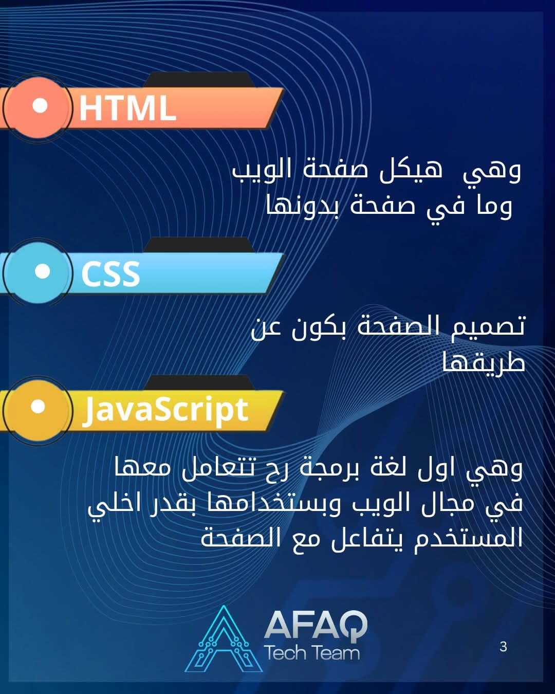

الاسم:مريم وحيد محمود عبده العزب
الرقم الجامعي:2504159
تُعد JavaScript إحدى لغات البرمجة التي تُستخدم في إنشاء صفحات ويب تفاعلية تستجيب لتفاعل المستخدم وتكمن أهميتها في إمكانية تغيير محتوى الصفحة والتعامل مع تصرفات المستخدم مثل إظهار رسالة عند الضغط على زر أو فتح قائمة عند النقر عليها ويهدف هذا التقرير إلى توضيح دور لغة JavaScript في تحويل صفحات الويب من صفحات ثابتة إلى صفحات تفاعلية
JavaScript لمطورون في بناء صفحات ويب تفاعلية بدايةً من تحديث مواجز الوسائط لااجتماعية وحتى عرض الرسوم المتحركة والخرائط التفاعلية، يمكن لوظائف JavaScript أن تحسّن تجربة مستخدم وقع الويب ونظًرا لأنها لغة برمجة نصية من طرف العميل، فإنها تعد واحدة من التقنيات لاأساسية في شبكة الويب العالمية على سبيل المثال، عندما ترى أثناء تصفح لاإنترنت عرضًا دوّاًرا للصور، أو قائمةً منسدلةً بطريقة انقر للعرض أو تغيًرا ديناميكيًا في ألوان العناصر على صفحة ويب فكل هذا من تأثيرات JavaScript.
في الماضي، كانت صفحات الويب ثابتة، كصفحات الكتاب وكانت الصفحة الثابتة تعرض المعلومات في تخطيط ثابت، ولم تكن تفعل كل ما نتوقعه لاآن من أي موقع ويب حديث وظهرت JavaScript كتقنية من جانب المتصفح لإضفاء مزيدٍ من الديناميكية على تطبيقات الويب وباستخدام JavaScript، يمكن للمتصفحات لااستجابة لتفاعل المستخدم وتغيير تخطيط المحتوى على صفحة الويب. ومع تطور اللغة أنشأ مطورو JavaScript مكتبات وأُطر عمل وممارسات برمجة وبدؤوا في استخدامها خارج متصفحات الويب واليوم يمكن استخدام JavaScript للتطوير من طرف العميل ومن طرف الخادم.
تشير JavaScript من جانب العميل إلى طريقة عمل JavaScript في متصفحك وفي هذه الحالة يكون محرك JavaScript موجودًا داخل التعليمة البرمجية للمتصفح تأتي جميع متصفحات الويب الرئيسة مضّمن بها محركات JavaScript. ويكتب مطورو تطبيقات الويب تعليمة JavaScript البرمجية بوظائف مختلفة مرتبطة بأحداث مختلفة مثل النقر بالماوس أو تمرير الماوس وتقوم هذه الوظائف بإجراء تغييرات على صفحات HTML وcss
JavaScript هي لغة ديناميكية يتم تشغيلها في المتصفّح وتسمح لنا بتغيير كل جانب تقريبًا من سلوك الصفحة يمكننا تعديل المحتوى من خلال إضافة عناصر وإزالتها من شجرة DOM ويمكننا تعديل سمات CSSOM لكل عنصر ويمكننا معالجة إدخال المستخدم، وغير ذلك الكثير.
بشكل عام تستخدم جافا سكريبت للتحكم في سلوك صفحة الويب على سبيل المثال: تغيير محتوى صفحة الويب يمكن لجافا سكريبت تغيير أي جزء من محتوى الصفحة وأقرب مثال لذلك هو المواقع متعددة اللغات حيث يمكن من خلال جافا سكريبت معرفة لغة المتصفح وضبط لغة الموقع على أساسه. إظهار رسائل للمستخدم في الوقت الفعلي استناداً لما يقوم به. يمكن استخدام JavaScriptلجعل صفحة الويب تتفاعل مع المستخدم فعند الضغط على زر معين يمكن إظهار رسالة على الشاشة أو تغيير جزء من محتوى الصفحة، وبذلك تصبح الصفحة أكثر تفاعاًل بداًل من عرض المعلومات بشكل ثابت.

| اللغه | وظيفتها |
|---|---|
| html | هيكل صفحه الويب وما في صفحه بدونها |
| css | تصميم الصفحه يكون عن طريقها |
| JavaScript | تجعل المستخدم يتفاعل مع الصفحه |